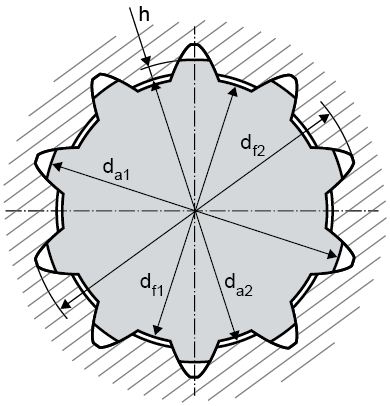

|
|
|


标准齿廓
您可以从列表框中选择以下标准之一：
- 根据 DIN 自定义输入
- DIN 5480
- DIN 5481 (锯齿形齿廓)
- DIN 5482 (锯齿形齿廓)
- 根据 ISO 自定义输入
- ISO 4156
- 根据 ANSI B92.1 自定义输入
- 根据 ANSI B92.2M 自定义输入
- ANSI B92.1
- ANSI B92.2M
对于花键，相应的值会在选择标准后显示在列表中。
| da1：轴的齿顶圆直径 | z：齿数 |
| da2：轮毂的齿顶圆直径 | x：变位系数 |
| m：模数 |

注意：
选择选项，为直边花键输入您自己的数据。此处关键因素是轴的齿顶圆直径必须大于轮毂的齿顶圆直径。否则，会显示错误消息。
Standard profiles
You can choose one of these standards from the selection list:
- Own input according to DIN
- DIN 5480
- DIN 5481 (Serration profile)
- DIN 5482 (Serration profile)
- Own input according to ISO
- ISO 4156
- Own input according to ANSI B92.1
- Own input according to ANSI B92.2M
- ANSI B92.1
- ANSI B92.2M
For splines, the corresponding values are displayed in the list after the norm selection.
| da1: Tip diameter of the shaft | z: Number of teeth |
| da2: Tip diameter of the hub | x: Profile shift coefficient |
| m: Module |
Note:
Select the option to enter your own data for the straight-sided spline. The critical factor here is that the tip diameter of the shaft is greater than the tip diameter of the hub. If not, an error message is displayed.